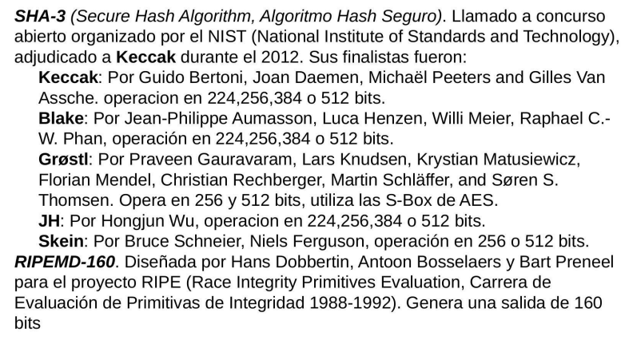

Clase 1
Unidades Temáticas
- Introducción a la Seguridad
- Amenazas a la Seguridad
- Criptografía
- Aplicaciones de Seguridad
- Calidad
- Normas
Presentación de la materia
Introducción a la seguridad
La información: Es un grupo de datos ya procesados y ordenados, que sirven para construir un mensaje que cambia el estado de conocimiento del sujeto o sistema que lo recibe.
En general se trata de administrar los recursos para asegurar los datos criticos.
Características de la información:Critica (Indispensable para la organización), valiosa(Activo apreciado por la organización y sus operaciones) y sensitiva(Debe ser conocida por las personas autorizadas). Las 3 características son independientes.
Triángulo ID:Disponibilidad (El usuario puede acceder a la información lo más rápido posible), Integridad(Garantizar que el dato que buscaba es confiable y no tuvo alteraciones inesperadas) y Confidencialidad(Solo la gente autorizada puede acceder a él). Hay un balance entre los tres, no pueden estar al máximo los 3 por definición.
Seguridad: libre de peligros o daño.

Seguridad de la informacion: establecen lo documental, area de estrategia, establecen los riesgos y como se va a manejar la empresa.
Seguridad Informática: Se orienta en el uso de la tecnología, la configuracion de dispositivos de red de seguridad, la configuración y el uso de sistemas que colecten información de otros sistemas ;son las implementaciones técnicas, hardware
Incidentes de seguridad: Son violaciones de la seguridad que ocasionan la destrucción, acceso no autorizado, pérdida o alteración (accidental o deliberada) de datos personales cuando están siendo transmitidos, están almacenados o son objeto de otros tratamientos.
Incidentes de seguridad
Ciberataque: Intento deliberado de obtener acceso a un sistema informático sin autorización en base al uso de diferentes técnicas y vulnerabilidades para la realización de actividades con fines maliciosos, como el robo de información, extorsión del propietario o simplemente daños al sistema.
Intrusión Acción provocada por un atacante o usuario malintencionado, que se aprovecha de una vulnerabilidad en el sistema para conseguir acceder a un área o dispositivo sin autorización con el objetivo de realizar actividades ilegítimas.
Riesgo: Probabilidad de que me pueda pasar algo no deseado .
Amenaza: Factor externo o interno más identificado que pone en peligro la información. Situación o agente externo que podria estar elevando un riesgo o generando un perjuicio.
No repudio: No poder rechazar una operacion que si hiciste.
Vulnerabilidades: Caracteristica propia que me expone a un riesgo o resultado no deseado.
Anonimato: Ejecutar una acción y no se relaciona a la persona con la acción en si.
Contenedores de la información
Sistemas aislados tienden a ser mas seguros, por su barrera fisica. Los sistemas interconectados son más utilizados
Causas de inseguridad:
●Un estado de inseguridad activo; es decir, la falta de conocimiento del usuario acerca de las funciones del sistema, algunas de las cuales pueden ser dañinas para el sistema (por ejemplo, activar servicios de red que el usuario no necesita)
●Un estado de inseguridad pasivo; es decir, la falta de
conocimiento de las medidas de seguridad disponibles (por
ejemplo, cuando el administrador o usuario de un sistema no
conocen los dispositivos de seguridad con los que cuentan)
Requisitos funcionales para la seguridad:
●Auditoría de Seguridad, registro de actividades.
●Soporte de cifrado, uso de criptografía para la protección de
datos.
●Gestión de seguridad, gestión de perfiles de usuario y
niveles de acceso vinculados a los mismos.
●Privacidad, soporte del anonimato de los usuarios.
●Autodefensa, controles para fallar de manera contenida o
prevista.
●Control de acceso, manejo de la cantidad y tiempo de las
sesiones, concurrencia e información sobre sesiones previas.
●Rutas o canales fiables, mecanismos que permitan confiar
en los recursos accedidos, como los certificados.
Anexos:
Anexo U0: Seguridad en sistemas informaticos
Se considera que un sistema es seguro cuando cuenta con los requisitos de confidencialidad, disponibilidad e integridad.
Sistemas aislados: No tienen acceso a ningún tipo de red, para su seguridad se implementa mecanismos de control de acceso fisico, como cerraduras, videovigilancia, etc junto con protocolos de gestion de privilegios de usuario.
Sistemas interconectados: Son el caso más general y extendido.
Seguridad física: Se encuentran dentro los asuntos relacionados a la protección a los soportes físicos de la información más que a la informacion misma.
Seguridad en los canales de comunicación: Como pertenecen a terceros y escapa a nuestro control, no es posible asegurar la seguridad.
Control de acceso a los datos: El acceso a un sistema informático debe permitir el acceso a la información solo a agentes autorizados. Se debe establecer privilegios individualizados e implementar cifrado para mantener la confidencialidad.
Autentificación: Se debe verificar fiablemente la autenticidad de la informacion que se recibe, envia y alamacena en un sistema informatico, los usuarios que acceden y los dispositivos que se comunican con el mismo.
No repudio: Se debe identificar al remitente de un mensaje y este debe asumir las responsabilidades derivadas de la información que haya podido enviar.
Anonimato: Preservar la identidad y la libertad del usuario.
U1 Anexo Seguridad lógica y seguridad física
Identificación y Autenticación:
Es la primera linea de defensa para la mayoria de los sistemas computarizados, permitiendo prevenir el ingreso de personas no autorizadas. Identificación: Es el momento en que el usuario se da a conocer en el sistema y Autenticación: Es la verificación que realiza el sistema sobre esta identificación.
Existen cuatro tipos de técnicas que permiten realizar la autenticación de la identidad del usuario.
- Algo que solo el usuario conoce. Por ejemplo una password.
- Algo que la persona posee. Por ejemplo una tarjeta magnética
- Algo que el individuo es y lo identifica univocamente. Por ejemplo la huella digital.
- Algo que el individuo es capaz de hacer: patrones de escritura.
Los controles de autenticación biométricos serian los más apropiados y faciles de administrar(ya que las passwords suelen ser olvidadas y los objetos perdidos), pero también los más costosos por lo dificil de su implementación eficiente.
Es conveniente que los usuarios sean identificados y autenticados solamente una vez, pudiendo acceder a las aplicaciones y datos que su perfil les permita, tanto en local como en remoto. Esto se denomina Single login.
Modalidad de acceso: Es el modo de acceso que se permite al usuario sobre los recursos y a la información. Puede ser:
Lectura: el usuario solo puede leer o visualizar la información.
Escritura: el usuario puede agregar datos, modificar o borrar información.
Ejecución: este acceso otorga al usuario el privilegio de ejecutar programas.
Borrado: permite al usuario eliminar recursos del sistema, como forma de modificación.
Todas las anteriores.
Ademas existen:
Creacion: permite al usuario crear nuevos archivos, registros o campos.
Búsqueda: permite listar los archivos de un directorio determinado.
Firewalls: Dispositivo de red que crea una separación entre redes públicas(no confiables) y redes privadas(confiables) mediante el análisis del tráfico de red permitiendo solamente el paso de cierto tráfico entre la red no confiable y la red confiable.
Caracteristicas:
-Son dispositivos de defensa perimetral que separan redes
-Filtran el tráfico dependiendo de reglas predefinidas
-No protegen de ataques internos
-No protegen de ataques no autorizados
-No protegen de la totalidad de ataques dañinos.
Los firewalls pueden clasificarse por su tipo de filtrado en cuatro categorias:
Packet filters, Circuit Level Gateways, Application Level Gateways, State-Full Multilayer Inspection
IDS Sistema de detección de Intrusiones: Es un elemento que detecta, identifica y responde a actividades no autorizadas o anormales.
Intrusión: Conjunto de acciones que intentan comprometer la integridad, confidencialidad o disponibilidad de un producto.
IPS Sistemas de Prevención de Intrusiones: Es el resultado de la combinación de IDS + Firewall en respuesta activa, estos dispositivos identifican el curso de un ataque y lo bloquean antes de que suceda.
Dispositivos UTM: Son soluciones centrales y fáciles de instalar.Funcionan en forma de sistemas de control de acceso a redes.
WAF Web Application Firewall: Es un dispositivo fisico o lógico que analiza el tráfico web, los datos recibidos por parte del usuario y protege de diferentes ataques web como: SQL Injection, Cross Site Scripting, Remote and Local File Inclusion, Buffer Overflows, Cookie Poisoning, etc.
U1 Anexo: Protección de la información
La seguridad de la informacion se articula sobre tres dimensiones, que son los pilares sobre los que aplicar las medidas de protección de nuestra información:
Disponibilidad, Integridad y Confidencialidad
La integridad hace referencia a que la información sea correcta y esté libre de modificaciones y errores.
La confidencialidad implica que la informacion es accesible unicamente por el personal autorizado. Es lo que se conoce como need-to-know, es decir la información solo debe ponerse en conocimiento de las personas, entidades o sistemas autorizados para su acceso.
La disponibilidad de la información hace referencia a que la información esté accesible cuando la necesitemos.
Las salvaguardas son las medidas necesarias para proteger la información de nuestro negocio.
Para la selección de estas medidas nos tenemos que fijar en: el sector de negocio; el costo; identificar, clasificar y valorar; y la naturaleza de los controles
Datos personales: son «toda información sobre una persona física identificada o identificable (el interesado)». Una persona es identificable si puede determinarse su identidad, directa o indirectamente.
Existen categorías especiales de datos, los denominados datos sensibles que exigen una protección reforzada y que están sujetos a un régimen jurídico especial. Estos datos son:
► Datos personales que revelan ideología, afiliación sindical, opiniones políticas, creencias religiosas y otras creencias.
► Datos personales que revelan el origen racial o étnico y los relativos a la salud o la vida sexual y orientación sexual, datos genéticos y biométricos.
► Datos de condenas penales o administrativas
Naturaleza de los controles:
Otro aspecto importante a considerar en la selección e implantación de controles es su tipología o naturaleza. Ésta puede ser:
►Técnica: medidas de carácter tecnológico dentro del ámbito de la seguridad. Son medidas técnicas: antivirus, cortafuegos o sistemas de copias de seguridad.
►Organizativa: medidas que se centran en la mejora de la seguridad teniendo en cuenta a las personas, por ejemplo: formación en seguridad, identificación de responsables o implantación de procedimientos formales de alta y baja de usuarios.
►Física: medidas físicas para proteger nuestra organización. Como por ejemplo, acondicionar adecuadamente la sala de servidores frente a riesgos de incendio, inundaciones o accesos no autorizados, establecer un sistema de control de acceso para entrar en las oficinas, poner cerraduras en los despachos y armarios o guardar las copias de seguridad en una caja ignífuga
Por defecto, toda organización debe seguir el principio del mínimo privilegio. Este principio se traduce en que un usuario sólo debe tener acceso a aquella información estrictamente necesaria para desempeñar sus funciones diarias.
► Definir los diferentes tipos de información que existen en nuestra organización: datos
de recursos humanos, contabilidad, clientes, marketing, producción, etc.
► Establecer quién puede acceder a cada tipo de información. Para acometer esta tarea puede ser útil, si la estructura organizativa lo permite, realizar una matriz que cruce información con áreas o departamentos que tienen necesidad de acceso a dicha información.
Las copias de seguridad son la salvaguarda básica para proteger la información. Dependiendo del tamaño y necesidades de la empresa, los soportes, la frecuencia y los procedimientos para realizar las copias de seguridad pueden ser distintos
Algunos soportes que podemos utilizar para la realización de copias son: USBs y discos duros portátiles, cintas de seguridad, almacenamiento de copias en la nube, discos duros de equipos especificos y soportes fisicos como DVD o CD.
En la copia total, se realiza una copia completa y exacta de la información original, independientemente de las copias realizadas anteriormente
En el caso de los sistemas de copia incremental, únicamente se copian los archivos que se hayan añadido o modificado desde la última copia realizada, sea total o incremental
En el sistema de copias diferenciales cada vez que se realiza una copia de seguridad, se copian todos los archivos que hayan sido modificados desde la última copia completa.
El cifrado consiste en ofuscar la información mediante técnicas de codificación, evitando que los datos sean legibles por cualquier persona que desconozca la clave de decodificación
El almacenamiento en la nube hace referencia a los servicios de almacenamiento ofrecidos por distintos proveedores de Internet y que funcionan de manera similar a un disco duro remoto. Este modelo proporciona varias ventajas:
► Reduce la necesidad de inversión en infraestructura propia.
► Permite delegar en terceros algunos aspectos que no forman parte de nuestro núcleo de negocio, como las copias de seguridad, su disponibilidad o la implantación de medidas de seguridad.
Clase 2:
Categorias de Caracteristica sensitiva: no sensitiva (expuesta a cualquier persona sin generar ninguna restriccion ni causar ningún conflicto), sensitiva(Información que debe protegerse adecuadamente porque su divulgación no autorizada podría causar algún daño a la organización o a personas individuales, aunque no necesariamente de manera crítica.) y sensitiva-personal(Información que es extremadamente privada y cuya divulgación no autorizada podría causar daños graves a individuos específicos o a la organización. Esta categoría requiere las más estrictas medidas de seguridad y privacidad debido al alto riesgo asociado con su exposición.)
Funciones de Hash
Es una función o método no reversible para generar un valor que represente de manera casi univoca a un dato. Ante el mismo archivo de entrada A siempre me devuelve el archivo de salida B.
U1 Anexo: Comprobadores de integridad
OpenSSL: Software para el uso de criptografia de proposito general y comunicación segura.
Ejemplo de Hashing
Cualquier valor que ingrese altera los valores de salida
Hashdeep: Verifica la integridad de todo un directorio. Es un verificador de dos tiempos, es decir, toma una "foto" del directorio y posteriormente compara los archivos con esa foto.

Tripwire detecta cambios, genera una BD local cifrada y contempla el manejo de politicas para separar areas importantes y areas irrelevantes.
U1 Introduccion a la seguridad
Seguridad Lógica
Consiste en la aplicación de barreras y procedimientos que resguarden el acceso a los datos y sólo se permita acceder a ellos a las personas autorizadas para hacerlo
●Controles de Acceso
●Identificación y Autentificación
●Roles
●Transacciones
●Limitaciones a los Servicios
●Modalidad de Acceso
●Ubicación y Horario
●Control de Acceso Interno
o Palabras Claves (Passwords)
o Cifrado
o Listas de Control de Accesos
o Límites sobre la Interfaz de Usuario
o Etiquetas de Seguridad
Transacción: Operación compuesta por varias actividades pero deben comportarse de manera atómica.
●Control de Acceso Externo
o Dispositivos de Control de Puertos
o Firewalls o Puertas de Seguridad
o Acceso de Personal Contratado o Consultores
o Accesos Públicos
●Administración
o Administración del Personal y Usuarios -
Organización del Personal
Practicas de Seguridad Lógica en móviles
● Usar contraseñas robustas y bloqueo automático
● Realizar copias de seguridad periódicas
● Instalar software solo de fuentes oficiales.
● Utilizar software solo con acceso legal a sus funcionalidades.
● Considerar el uso de software de seguimiento, borrado de datos y/o bloqueo remoto.
● Evitar o restringir conexiones a redes publicas o no confiables.
● Deshabilitar sistemas de Bluetooth, NFC y otras tecnologías inalámbricas cuando no se requiera el uso de los mismos en
dispositivos confiables.
● En dispositivos con conexión de datos móviles tener el PIN
activado y su el PUK e IMEI memorizado.
BYOD
Es una política empresarial para el uso de dispositivos tecnológicos que se caracteriza por permitir a los empleados el uso de sus propios dispositivos personales (portátiles,smartphones, tablets) para el trabajo, así como también el acceso desde los mismos a las redes corporativas, aceptando su uso compartido para las tareas profesionales como para las personales.
Rastreo y gestión remota de dispositivos
Este tipo de software permite realizar operaciones de forma remota
sobre el equipo permitiendo el siguiente tipo de acciones:
● Rastreo del dispositivo
● Borrado de datos
● Bloqueo del dispositivo
● Obtención de información del medio (grabación de audio, vídeo),etc..
Son aplicaciones particularmente útiles ante situaciones de pérdida y robo. Su funcionalidad suele estar limitada por la conectividad del equipo.
Copias de seguridad: planear como backupear, para saber que, como y cuando realizar una copia
Elementos comunes en el manejo de la seguridad lógica:
● Firewalls
● Firewalls personales
● Escaners de vulnerabilidades
● Honeypots, Honeynets, Padded cells(sistemas que se usan para aislar distintos tipos de ataques no conocidos)
● Verificadores de integridad
●IDS(Intrusion Detection System)
●IPS(Intrusion Protection System)
● Antivirus
● WAF(Web Application Firewall)
VPN: Una estructura de red que con soporte lógico que permite el trafico de información privada sobre una infraestructura de red pública mediante el uso de criptografía.
Seguridad física
Consiste en mecanismos destinados a proteger físicamente cualquier recurso del sistema de amenazas producidas tanto por el hombre como por la naturaleza; en general serán prevención y detección.
●Tipos de Desastres
oDesastres naturales, incendios accidentales tormentas e inundaciones.
oDisturbios, sabotajes internos y externos deliberados.
oAmenazas ocasionadas por el hombre.
●Acciones Hostiles
oRobo
oFraude
oSabotaje
●Control de Accesos
oUtilización de Guardias
oUtilización de Detectores de Metales
oUtilización de Sistemas Biométricos
oVerificación Automática de Firmas (VAF)
oSeguridad con Animales
oProtección Electrónica
Impacto en la organización
Perdida de datos: puede afectar la reputación, la productividad y la rentabilidad de la organización.
Robo de identidad: Puede afectar a los clientes y empleados de la organización.
Interrupción del negocio: Puede causar daños economicos y afectar la imagen de la organización
Daño a la reputación: Puede afectar la confianza de los clientes y socios de la organización.
Clase 3 Unidad 2
U2 Amenazas a la seguridad
Daño: el perjuicio que se produce cuando un sistema falla. Debe ser cuantificable, la unidad mas elegida es el dinero.
Riesgo: Producto entre la magnitud entre el daño y la probabilidad de ocurrencia.
Amenaza: Situacion de año con riesgo probable
Vulnerabilidad: Deficiencia propia susceptible de producir un fallo
Exploit: Técnica que aprovecha una vulnerabilidad.
Tipos de vulnerabilidades: Debido al diseño(nace y se define en etapas tempranas del ciclo de vida de software); debido a la implementación(problemas de implementacion debido al tiempo, cambios de prioridades, malas practicas, etc); y debido al uso(usuarios que hacen lo posible para vulnerar el sistema).
Areas de vulnerabilidad: Cliente, Red y Servidor. El servidor es el más seguro de los 3 porque es el area donde se tiene más control.
La nube:

CVE: Codigo asignado a una vulnerabilidad que le permite ser identificada de forma univoca.
CWE: Lista de tipos de debilidades de Software y Hardware.
CVSS: Conjunto de estándares para rankear una vulnerabilidad.
Prevención de vulnerabilidades
DAST: Scanners de vulnerabilidades.
SAST: Auditores de código.
IAST: Detecta vulnerabilidades en tiempo real durante la ejecución de la aplicación.
Redes trampa: https://www.honeynet.org
CERT Y CSIRT: Equipos reconocidos por la dirección de su organización como responsables de gestionar incidentes de seguridad informatica que le corresponden.
DoS: Ataque a un sistema de computadoras o red que causa que un servicio o recurso sea inaccesible a los usuarios legitimos.
Flooding: Genera solicitudes maliciosas a un servicio para saturarlo o que entre a un modo de espera.
BotNet: Conjunto de terminales que ejecutan software que permite su control total o parcial desde ubicaciones remotas.
Sniffers:
Programa de captura de las tramas de red.
Atacando a los navegadores:
Tampering o Data Diddling: Modificación no autorizada de la información.
Ataques mediante JS:
Ataques drive-by download: Infectan de forma masiva a los usuarios, simplemente ingresando a un sitio web determinado.
Hijackers: Programas que alteran el funcionamiento o configuración del cliente para que el atacante pueda "secuestrar información de interés."
Rootkits: Programas que permiten que una aplicación maliciosa permanesca oculta en el SO.
Backdoors: Programas que habilitan un acceso alternativo al sistema permitiendo evitar el método de autenticación principal.
Stealers: Programas que acceden a la información almacenada en el equipo para facilitarsela al atacante.
Keyloggers: Programas o dispositivos fisicos que registran la actividad de los dispositivos de entrada, como el teclado.
Ransomware: Retienen el control del equipo o cifran información almacenada en el mismo para que no pueda ser accedida.
Clase 4: U2
U2 Amenazas a la seguridad
Debilidad: riesgo general
Vulnerabilidad: riesgo propio con más detalles
Botnet: genera una actividad sincronizada contra el usuario.
U2 Anexo SAST PMD
PMD: es una herramienta de análisis estático que se utiliza para revisar y mejorar la calidad del código fuente. Esto permite a los desarrolladores mejorar la calidad y mantenibilidad de su software.
OWASP: Riesgos de seguridad en aplicaciones:
AppSec Labs
Cobalt.io
GitLab
Tasa de incidencia: Porcentaje de la población de aplicaciones que tiene al menos una instancia de un tipo de vulnerabilidad.
Factores de datos:
CWEs mapeadas
Tasa de incidencia
Cobertura
Explotabilidad ponderada
Impacto ponderado
Total de ocurrencias
Total de CVEs
Top ten riesgos 2021
1-Pérdida del control de acceso
2-Fallas criptográficas
3-Inyección
4-Diseño inseguro
5-Configuración de seguridad incorrecta
6-Componentes vulnerables y desactualizados
7-Fallas de identificación y autenticación
8-Fallas en el software y en la integridad de los datos
9-Fallas en el registro y monitoreo
10-Falsificación de solicitudes del lado del servidor
Pérdida del control de acceso:
Por alguna metodologia se pierde el control del usuario de la aplicación. Ejemplo: se fuerza un endpoint sin verificar si se tiene acceso a él. Referencia directa insegura a objetos: Alguien fuerza a la aplicación a que le entregue una información que no le corresponde. El backend trabaja con un indice, una referencia directa al objeto de datos.

Ejemplo de intento de escalar privilegios(se usa el navegador para cambiar el rol).
Referencia directa: Se expone el identificador.
En la Referencia indirecta se usa algo intermedio, hay una conversion intermedia. Hago un proceso o algoritmo que me va a aplicar una conversión y me deja 3 elementos para ese usuario. Sin embargo para el otro grupo de elementos que le corresponde a otro usuario, mi funcion los enumera desde cero nuevamente. Hay una relación interna entre los numeros que tengo yo y los que estan en la base, sin embargo solo le devuelvo los elementos X que le corresponde

OWASP ESAPI: Utiliza diccionarios para crear una referencia indirecta, convierte una secuencia lineal y predecible en un valor con un dominio mas grande y aleatorio.
Imagenes embebidas: No uso referencias, reemplazo el acceso al controlador con la informacion completa de la imagen.Se recomienda cuando el volumen de datos que va a renderizar es limitado
Fallas Criptográficas:
La informacion puede estar almacenada,en tránsito o en procesamiento. Conviene cifrar en la app para que llegue cifrada a la bd y que no pueda ser obtenida previamente para un uso malicioso, el problema es la performance. Si lo hiciera mas abajo como en la bd o el fylesystem tendria mas performance pero seria mas inseguro.

Clase 5:
U2 Amenazas a la seguridad
La vulnerabilidad es una debilidad detectada, implementada en un producto, entonces la vulnerabilidad es más específico, propio de un producto en particular y/o versión. En cambio, la debilidad es algo más general como las malas prácticas, manera equivocada de usar un recurso de programación.
¿Cómo podria estar escuchando una aplicación web o una aplicación móvil? A traves de Man in the middle y con sniffers
Inyección:
Inyección y Cross-site, ocurren cuando datos no confiables son enviados al interprete como parte de un comando o consulta.

Medidas de prevención:
Uso de APIs con manejo parametrizado de interpretes o una herramienta de ORM
Se puede sanitizar para frenar cuando no hay parametros, uno puede removerlos o reemplazarlos para que no sean interpretables.
Validación de entrada positiva o lista blanca, REGEX. Antes de tomar el dato reviso que este en un formato esperado.
Establecer un limite en las queries.
CSRF:
La aplicación permite que los usuarios envien peticiones de cambio de estado, generalmente en una imagen, iframe, en lugar de cargar la imagen envia la peticion HTTP falsa. Se evita esto con un token unico y no predecible.
XSS-Cross Site Scripting
La aplicación toma datos no confiables y los envia al navegador web sin una validacón y codificación apropiada. Se usa para sesuestrar sesiones de usuario, destruir sitios web o redirigir al usuario a un sitio malicioso.
XSS Reflejado: Se busca que el usuario dispare una instruccion JS hacia el servidor y se devuelve con una solicitud o codigo.
XSS Almacenado:Se realiza en dos tiempos, el primero el atacante busca como atacar y deposita un codigo JS, el segundo el usuario consulta la página web y recibe el codigo JS a la victima.
XSS Basados en DOM:
Buscan generar modificaciones en la estructura DOM de la pagina.
Diseño inseguro:
Se basa en las elecciones del diseño al momento de iniciar el trabajo de preparación de una aplicación. Actualmente como flujo de recuperación de credenciales un segundo factor de autenticación.
Configuración de Seguridad Incorrecta:
Una buena seguridad requiere un marco, servidor de aplicación, plataforma. Estas configuraciones deben ser establecidas, mantenidas ya que no son seguras por defecto, la mayoria de lo productos son funcionales por defecto.
Entidad Externa de XML(XXE):
XML es un lenguaje de etiquetas, se puede usar para armar estructuras.
Componentes Vulnerables y Desactualizados:
Si un componente vulnerable es explotado, podria darse lugar a un ataque que pueda facilitar una seria pérdida de datos o comprometer al servidor.
Hay que identificar componentes y la versión que están ocupando, incluyendo dependencias. Establecer politicas de seguridad, pasar tests de seguridad y licencias aceptables. Agregar capas de seguridad a componentes vulnerables.
Clase 6:
Inyección del lado del cliente se hace con JS y se conoce como XSS.
Inyección del lado del servidor generalmente se hace con SQL. Se recomienda el uso de ORMs para evitarlas
CSRF es una solicitud forzada de HTTP. Ejemplo: infiltrar una imagen para invocar una solicitud al backend. Se previene con un token único e impredecible.
XSS:
Diseño inseguro: Basado en decisiones de fase tempranas de una aplicación.
Configuración de seguridad incorrecta: las configuraciones son incorrectas o no son mantenidas en el tiempo. Ejemplo: dejar una consola como está instalada por defecto.
Entidad XML: expresiones no parseables, pero que el parsed podia identificar y reemplazar por otro valor.
XXE: Expresiones no parseables pero que el parsed podria ser reemplazado. Hay 5 entidades por defecto: ampersand, mayor, menor,
Componentes vulnerables y desactualizados: Identificar componentes para tomar medidas
Fallas de identificacion y autenticación: Alinear politicas de la empresa con rotación de contraseñas, gestionar el ciclo de vida de la sesión..
Fallas en el software y en la integridad de los datos: Dependencia de plugins, repositorios o CDN no confiables, asi como actualizaciones automáticas adulteradas o alteraciones de objetos o datos serializados.
Deserialización insegura: La serialización es preparar información para que pueda ser comunicada con la idea de que yo pueda poner de forma segura esa informacion y después pueda ser recuperada. Se serializa información que está en memoria.
Medidas de prevención: No aceptar objetos serializados de fuentes no confiables.
Fallas en el registro y en monitoreo: Registrar lo que hace la aplicación y monitorear cuando existen comportamientos inesperados o un volumen grande de errores. Como prevención se usa los logs
Falsificación de solicitudes del lado del servidor (SSRF): URL HTTP desde el lado del servidor, el servidor recibe una solicitud y lo ejecuta inmediatamente. Se previene sanitizando y validando datos de entrada proporcionados por el cliente
Controles proactivos: Buenas practicas alineadas con el OWASP top-ten.
U1 Anexo: Protección de la información
Preguntas de parcial:
¿ A qué ataque del OWASP Top-Ten se refiere la siguiente definición: "el atacante puede ejecutar secuencias de comandos en el navegador de la victima.."?
- Referencia Directa Insegura a Objetos
- Ausencia de Control de Acceso a Funciones
- Falsificación de Peticiones en Sitios Cruzados(CSRF)
- Secuencia de Comandos en Sitios Cruzados(XSS)
¿ Cuál de las siguientes caracteristicas no están asociadas a los firewalls?
- Alta disponibilidad (AD)
- Balanceo de carga (BCFW)
- Filtrados de contenidos / Anti-spam
- Almacenamiento de datos de negocio
¿ Cuál de los siguientes eslementos NO está catalogado como una Acción Hostil en Seguridad Fisica?
- Sabotaje
- Fraude
- Inundación(Flooding)
- Robo
¿ Cuál de los siguientes elementos NO forma parte de la pirámide ID?
- Confidencialidad
- Identificación
- Disponibilidad
- Ninguno
¿ Cuál de los siguientes elementos NO se encuentra dentro de los Controles de Acceso Interno de la seguridad lógica?
- Ninguno
- Contraseñas
- Etiquetas de seguridad
- Listas de control de accesos
Seleccione la opción según la definición de amenaza: "Entendemos por amenaza aquella situación de daño cuyo..."
- Riesgo de producirse es significativo
- Impacto genera una detención total del sistema
- Origen se encuentra en el código de la aplicación
- Impacto no afecta a la funcionalidad del sistema
¿ Cuál de los siguientes puntos no es un atributo del protocolo TCP?
- No es orientado a conexión
- Un paquete tiene un números de puerto origen y destino
- Corre sobre IP
- Cada paquete tiene un número de secuencia y un flag
¿ Cuál de los siguientes elementos se usa con el fin de capturar tramas de red?
- Sniffer
- Ninguno de los anteriores
- IDS
- Firewall Personal
¿ Cómo se denomina a la zona ubicada entre la red interna y la externa donde habitualmente se ubican a los servidores de la empresa (Web, DB, FTP, etc)?
- B2B
- DMZ
- Router
- LBA
¿ En qué zona ubica al ataque de inyección?
- Area de Servidor
- Area de Red
- Area de Cliente
- Ninguna
¿ Qué se entiende por tampering?
- Es un ataque de alteración de datos no autorizados
- Es una vulnerabilidad que afecta al codigo JavaScript
- Ninguna respuesta es correcta
- Técnica para redireccionar al usuario hacia otro servidor
¿ A qué tipo de equipo se está refiriendo la siguiente definición? "Analiza el tráfico de la red para tratar de detectar patrones sospechosos que indiquen ataques o intenciones de ataques contra algun recurso. Una vez identificados, puede tomar ciertas medidas contra ese tipo de tráfico como generar alertas o inclusive bloquear o descartar el tráfico que viene de ese origen."
- Statefulls
- HoneyNets
- IDS
- HoneyPots
¿ Cual de los siguientes elementos corresponde a una Modalidad de acceso a la información en Seguridad Lógica?
- Escritura
- Ejecución
- Borrado
- Lectura
- Todas las opciones
¿ Cuál de los siguientes opciones corresponde al modelo de funcionamiento general de un IDS?
- Filtrado - Identificación - Acción
- Recolección - Análisis - Respuesta
- Ninguno de los anteriores
- Recolección - Identificación - Clasificación
¿ A qué tipo de equipo se está refiriendo la siguiente definición? "Divide la LAN en varios segmentos limitando el tráfico a uno o más segmentos en vez de permitir la difusión de los paquetes por todos los puertos"
- Switch
- Router
- Bridge
- Hub
¿ Cuál de los siguientes elementos no compone la lista de técnicas de OWASP TopTen Proactive Controls ?
- Implement Appropiate Access Controls
- Validate all inputs
- Parameterize Queries
- Use virtual Keyboard in the login
- Encode Data
Indique el tipo de ataque correspondiente a la siguiente definición? "[...] ocurren cada vez que una aplicación tome datos no confiables y los envia al navegador web sin una validación y codificación apropiada"
- Falsificación de peticiones en sitios cruzados(CSRF)
- Inyección
- Referencia directa insegura a objetos
- XSS Cross Site Scripting
Indique el tipo de ataque correspondiente a la siguiente definición? "ocurre cuando datos no confiables son enviados a un interprete como parte de un comando o consulta. Los datos hostiles del atacante pueden engañar al interprete en ejecutar comandos no intencionados o acceder datos no autorizados"
- Referencia directa insegura a objetos
- Inyección
- Falsificación de peticiones en sitios cruzados (CSRF)
- Pérdida de autenticación y gestión de sesiones
¿ Cuál de los siguientes tipos no corresponde a la lista OWASP de 10 ataques mas frecuentes?
- Inyección
- Control de accesos sin contraseñas seguras
- Perdida de autenticación y gestión de sesiones
- Falsificación de peticiones en sitios cruzados (CSRF)
¿ Cuál de los siguientes elementos no forma parte del OWASP Top-Ten?
- Referencia Directa Insegura a objetos
- Redirecciones y reenvios no válidos
- Configuración de seguridad incorrecta
- Denegación de Servicio
Indique a que termino se asocia la siguiente definición "[...] es la propiedad que hace mantner los datos libres de modificaciones no autorizadas"
- Integridad
- Disponibilidad
- Consistencia
- Confidencialidad
¿ Qué es un firewall?
- Un dispositivo que permite bloquear o filtrar el acceso entre dos redes; usualmente una privada y otra externa
- Un dispositivo de antivirus de red
- Un dispositivo que permite la autenticación en aplicaciones
- Una libreria de software que permite asegurar una aplicación web
¿ En qué zona ubica al ataque de exposición de datos sensibles?
- Areas de cliente
- Area de Red
- Area de servidor
- Area de Red y Area de Servidor
¿ Cuál de estas tecnologias es considerada generadora de riesgo por ser ejecutado en el cliente?
- Java Applet
- ActiveX
- JavaScript
- Todas las respuestas
¿ A qué se denomina "Learning Mode" en el contexto de la implementación de un WAF?
- Al modo de operación donde la herramienta registra la actividad normal de la aplicación para que posteriormente pueda ser utilizada a fin de generar reglas
- Al modo de operación donde se permite que el usuario acceda a la aplicación para generar los ataques que posteriormente serán bloqueados
- A la capacitación del personal que llevara adelante la configuración de la herramienta
- Ninguna de las opciones
SYN Flood corresponde a una técnica utilizada para realizar un ataque de
- Inyección
- Denegación de Servicio
- Control remoto de un servidor
- Secuencia de Comandos en Sitios Cruzados (XSS)
¿Cuál de las siguientes tecnologías no puede ser utilizada en un ataque de inyección?
- SQL
- Ninguna
- LDAP
- X-Path
¿Cuál de estas afirmaciones es verdadera en relación a los firewalls?
- Todas las anteriores
- No protege de accesos no autorizados
- No protege de todos los ataques dañinos
- No protege de ataques internos
¿ Qué es un BugTraq?
- Es una lista de notificación sobre vulnerabilidades encontrados en software y hardware
- Es un software diseñado para buscar vulnerabilidades
- Es una variante de virus o troyano
- Ninguna de las opciones es correcta
¿ Qué protocolo soporta la implementacion de VPNs?
- Ninguna de las opciones
- IPSec
- Secure TCP
- ICMP
¿Cuál de los siguientes puntos NO corresponde a un tipo de vulnerabilidad?
- Debidas al uso
- Debidas al diseño
- Debidas a la implementacion
- Ninguna de las anteriores
¿ Cuál de los siguientes factores no es evaluado por la OWASP para determinar los riesgos incluidos en el proyecto Top-Ten?
- Vectores de ataque
- Detectabilidad de Debilidades
- Impacto técnico
- Impacto en el negocio
¿ Cuál es la principal función de un comprobador de integridad?
- Identificar archivos que han sido alterados en el sistema de archivos
- Notificar via email sobre cambios en el sistema de archivos
- Identificar los cambios realizados en los archivos del sistema
- Identificar al usuario que ha introducido cambios en el sistema de archivos
Seleccione el tipo de atauqe correspondiente a la siguiente definición: "Es un ataque a un sistema de computadoras o red que causa que un servicio o recurso sea inaccesible a los usuarios legitimos"
- Inyeccion
- Pérdida de autenticación
- Tampering
- Denegación de Servicio
¿ Cuál de estos elementos corresponde a la siguiente definición: "Se trata de un dispositivo que analiza el tráfico web(entre el servidor web y la WAN ), los datos recibidos por parte del usuario y protege de diferentes ataques"?
- Firewall personal
- WAF
- Layer 3 Firewall
- IDS
¿Explique el ataque por Injection comparándolo y asociándolo con el de XSS. Adicionalmente indique que medidas se recomiendan para proteger a una aplicación de este ataque?
Desarrolla la definición y función de un IDS, explique sus diferencias con un IPS y un Firewall
¿ Cuál de estos es el concepto de hijackers?
- Programa que alteran el funcionamiento para secuestrar informacion de interes
- ---
- ---
- ---
¿ Cuál no es un tipo de hijackers?
- rootkit hijackers
- page hijackers
- session hijackers
- browser hijackers
¿ Cuál es la definicion de riesgo?
- Debe ser cuantificable
- Debe haber probabilidad de ocurrencia
- Debe haber una alta probabilidad de oocurrencia y ser cuantificable
- Ninguna
DoS application concepto
- El atacante opera a nivel de aplicacion usualmente por HTTP intentando saturar el servidor y/o un servicio que este presta
- Ataquea un sistema de computadoras o redque causa que un servicio o recurso sea inaccesible para los usuarios legitimos
- Se inunda a la victima con un gran volumen de paquetes o conexiones de red, sobrecargando el equipamiento de la red, servidores o ancho de banda
- El atacante utiliza una vulnerabilidad en el diseño o implementacion de la aplicación.
Ransomware concepto
- Retienen el control o cifran información almacenada en el mismo para que no pueda ser accedida
- ---
- ---
- ---
Que tipo de ataque genera la exposicion de un id por un request GET
- Inyeccion
- XSS
- Perdida de sesion
- ---
Rootkit concepto
- Programas que permiten que una aplicacion maliciosa permanezca oculta
- ---
- ---
- ---
Backdoors concepto
- Programas que habilitan un acceso alternativo al sistema evitando la autenticacion
- ---
- ---
- ---
a que concepto se refiere esta definicion
- Seguridad de la informacion
- Seguridad informatica
- Gestion de la seguridad
- ---
CVE de Mitre
- Vulnerabilidades descriptas de manera univoca
- ---
- ---
- ---
CWE
- Lista de debilidades
- ---
- ---
- ---
Clase 7 Criptografia
U3 Anexo historia
La criptografía nace en la 2 WW, se trataba de descifrar mensajes envaiados por ele ejercito aleman. 'Cualquier persona o equipo es capaz de desarollar un algoritmo criptográfico que él mismo no sea capaz de romper'.
U3 Anexo conceptos básicos
La criptografía es el arte de escribir con clave secreta o de un modo enigmático.
La criptología agrupa criptografía y criptoanálisis.
Un criptosistema es una quintupla(M, C, K, E, D). M representa el conjunto de los mensajes sin cifrar que pueden ser enviados. C representa el conjunto de todos los posibles mensajes cifrados, o criptogramas. K representa el conjunto de claves que se pueden emplear en el criptosistema. E es el conjunto de transformaciones de cifrado o familia de funciones que se aplica a cada elemento de M para obtener un elemento de C. Existe una transformación diferente Ek para cada valor posible de la clave k. D es el conjunto de transformaciones de descifrado, análogo a E.
Criptosistemas simétricos o de clave privada: Son aquellos que emplean la misma clave k tanto pra cifrar como para descifrar
Criptosistemas asimétricos o de llave pública: emplean una doble clave(Kp, KP). Kp se conoce como clave privada y KP se conoce como clave pública. Una de ellas sirve para la transformación E de cifrado y la otra para la transformación D de descifrado.
Esteganografía: Ocultar en el interior de una información, aparentemente inocua, otro tipo de información.
Criptoanálisis: Consiste en comprometer la seguridad de un criptosistema. Se hace descifrando un mensaje sin conocer la llave, o bien obteniendo a partir de uno o más criptogrmas la clave que ha sido empleada en su codificación.
U3 Anexo Enigma y otros
Algoritmo DES:
Algoritmo RSA:
Algoritmo IDEA:
Algoritmo DSA: Estandar para firma digital.
U3 Criptografía
m es el mensaje,k es el conjunto de claves, e es la funcion, c es el resultado
Criptografia clasica
Contiene cifradores por transposición y por sustitución.
El mensaje lo pongo en una matriz de 5 columnas con "_" por espacios, uso una clave y la uso como referencia para realizar la transposición de columnas. Siempre se trabaja con los mismos caracteres.
Los cifradores por sustitución utilizan la técnica de modificación de cada carácter del texto en claro por otro correspondiente al alfabeto de cifrado. Si el alfabeto de cifrado es el mismo del mensaje o el único se habla de cifradores monoalfabéticos, si interviene más de un alfabeto es polialfabético.
Cifradores por sutitución polialfabética
Se define un alfabeto pero se distribuye en una matriz de dos dimensiones.
Esquemas de modificación:
Binario: Representa la información a nivel de bits con 0 y 1.
Hexadecimal: Representa la información con 16 caracteres con representación gráfica(0123456789ABCDEF) asignando 4 bits a cada carácter.
Base64: Representa la información con 64 caracteres representables indicando con un caracter especial (=) los octetos faltantes del último bloque.
Criptografía moderna:
Algoritmos Simétricos: Es un tipo de cifrado que usa una misma clave para cifrar y para descifrar. Las dos partes que se comunican mediante el cifrado simétrico deben estar de acuerdo en la clave a usar de antemano. Una vez de acuerdo, el remitente cifra un mensaje usando la clave, lo envia al destinatario y este lo descifra usando la misma clave.
Dentro de las ventajas se encuentra la sencillez de implementación, la robustez, la velocidad de cifrado y la longitud del mensaje. Dentro de las desventajas está la clave debe ser compartida previamente con seguridad y la comunicación entre múltiples actores requiere numerosas claves.
Algoritmos simétricos de bloque:
XOR:
Propiedades: Es conmutativa: Es decir que A xor B = B xor A. Es asociativa:(A xor B) xor C = A xor (B xor C). Es autoinversa:(A xor B) xor B = A
Modos de cifrado de bloques:
ECB: Electronic codebook, en este método el mensaje se fracciona en partes y cada una es cifrada de manera independiente.
El problema es que es lineal.
Padding: los algoritmos simétricos de bloque requieren que el mensaje sea fragmentado en partes de una longitud fija; esto podria causar que el ultimo bloque sea de una longitud menor a la requerida, para esto se recurre a los métodos de padding.
CBC: Cipher block chaining, en este método el mensaje se fracciona en partes y se realiza un XOR con el bloque previo antes de cifrar cada parte.
Hago un XOR entre el texto plano y el vector de inicialización(mismo tamaño del bloque de entrada, deberia estar compuesto por informacion aleatoria y no deberia ser reutilizada en otro mensaje), lo cifro y vuelvo a hacer el XOR, se van encadenando en total 3 veces.
CFB: Cipher Feedback, en este método el mensaje se fracciona en partes, se cifra un vector de inicialización y al resultado se le realiza un XOR con el bloque del mensaje. Los bloques posteriores utilizan como entrada el texto cifrado para reemplazar al vector de inicialización.
OFB: Output Feedback, este método opera de manera similar a CFB con la diferencia que el bloque a ser utilizado como entrada del siguiente proceso es tomado de la salida del algoritmo justo antes de realizar el XOR.
CTR: Modo de counter o contador, en este modo de operación se utiliza un "nonce" equivalente al IV anterior, que es alterado por un contador incrementado en cada bloque de datos, para obtener un valor que luego será operado con el bloque de datos usando XOR.
Existen otros modos y algunos agregan autenticación a la confidencialidad. Ejemplo: PCBC, CCM, CWC, EAX, GCM, PCFB y XCBC
Cifrado de flujo:

Secuencias criptográficamente aleatorias: Para que una secuencia pseudoaleatoria sea criptográficamente aleatoria, ha de cumplir la propiedad de ser impredecible. Debe ser computacionalemente intratable el problema de averiguar el siguiente número de la secuencia, teniendo total conocimiento acerca de todos los números anteriores y del algoritmo de generación empleado.
Funciones de HASH: Se define como una función o método no reversible para generar un valor que represente de manera casi univoca a un dato. Los principales usos son Soporte para criptografia asimétrica, Tablas de Hash, Verificación de integridad, Soporte para procesos de autenticación.
Funciones HASH - MDC:
Message Authentication Code: Adiciona criptografía al proceso de hash para aumentar la seguridad del mismo.
Clase 8:
U3 Criptografía
Funciones para proteger especificamente contraseñas, no se guarda la contraseña sino un valor derivado.
Sistema modular: ejemplo reloj de agujas.
Algoritmos asimétricos - Primos relativos:
Sean a, b e Z, se dice que son Primos relativos(o coprimos) "a" y "b" si no tienen ningún factor primo en común, es decir si no tienen otro divisor común mas que 1 ó -1, o cumplen que el mcd (a,b) = 1.
El algoritmo de Euclides extendido permite, además de encontrar un máximo común divisor de dos números enteros a y b, expresarlo como la mínima combinación lineal de esos números, es decir, encontrar números enteros s y t tales que mcd(a, b) = as + bt.
Algoritmos asimétricos: El sistema de cifrado de clave pública usa un par de claves para el envío de mensajes. Las dos claves pertenecen a la misma persona a la que se ha enviado el mensaje. Una clave es pública y se puede entregar a cualquier persona. La otra clave es privada y el propietario debe guardarla para que nadie tenga acceso a ella. El remitente usa la clave pública del destinatario para cifrar el mensaje y una vez cifrado solo la clave privada del destinatario podrá descifrar este mensaje.
Ejemplos: Diffie-Hellman; RSA; ElGamal; DSA; ECC, Criptografia de curva eliptica (ECDH, ECDSA...)
Dentro de las ventajas se encuentra que No requiere confidencialidad en la distribución de la clave, la misma clave puede ser utilizada por múltiples actores en la comunicación y permite autentificar mensajes. Como desventajas están La velocidad del cifrado/descifrado, la longitud del mensaje limitado, el tamaño del mensaje cifrado es mayor y se requieren claves de gran extensión.
Este tipo de algoritmos suelen disponer de operaciones como: Generación de claves, cifrado, descifrado, firma y verificación de firma.
Autentificación de mensaje(Firma): Algunos algoritmos asimétricos permiten que se pueda autenticar un mensaje para garantizar su integridad. En ese caso la clave que se usa para cifrar es la clave privada, al revés que para la simple codificación de mensajes.

El problema es la factorización de números.
El algoritmo DSA (Digital Signature Algorithm) es una parte el estándar de firma digital DSS (Digital Signature Standard), definido en el FIPS-186. Es una variante del método asimétrico de ElGamal.
Generación de la firma
Verificación de la firma
Algoritmos públicos y privados:
Los algoritmos públicos son aquellos cuya definición y funcionamiento se ponen a disposición pública, permitiendo que cualquier persona o entidad acceda al mismo para su evaluación o investigación. Al contrario los privados son aquellos cuyo funcionamiento interno es desconocido, son considerados menos confiables.
Clase 9
HTTP vs HTTPS:
HTTP: Hyper Text Transfer Protocol, protocolo para transmisión de información en plano, sin cifrado. Su puerto por defecto es el número 80.
HTTPS: Hyper Text Transfer Protocol Secure, protocolo para transmisión de información cifrada mediante SSL o TLS. Su puerto por defecto es el número 443.
SSL (Secure Sockets Layer)
Es un protocolo que proporciona privacidad e integridad entre dos aplicaciones. El sistema SSL es independiente del protocolo utilizado; esto significa que puede asegurar transacciones realizadas en la Web a través del protocolo HTTP y también conexiones a través de los protocolos FTP, POP e IMAP. SSL actúa como una capa adicional que permite garantizar la seguridad de los datos y que se ubica entre la capa de la aplicación y la capa de transporte.
Los datos que circulan en un sentido y otro entre el cliente y el servidor se cifran mediante un algoritmo simétrico como DES o RC4. Un algoritmo de clave pública (generalmente RSA) se utiliza para el intercambio de las claves de cifrado y para las firmas digitales. El algoritmo utiliza la clave pública en el certificado digital del servidor. Con el certificado digital del servidor, el cliente también puede verificar la identidad del servidor.
Fases:
- Establecimiento de la conexión y negociación de los algoritmos criptográficos que van a usarse en la comunicación a partir frl conjunto de algoritmos soportados por cada uno de los interlocutores.
- Intercambio de claves usando algún mecanismo de clave pública y autentificación de los interlocutores a través de sus certificados digitales.
- Cifrado simétrico de tráfico.
TLS (Transport Layer security)
es una evolución del protocolo SSL, es un protocolo mediante el cual se establece una conexión segura por medio de un canal cifrado entre el cliente y servidor.
Caracteristicas adicionales:
Firma electrónica:
Se entiende por firma electrónica al conjunto de datos electrónicos integrados, ligados o asociados de manera lógica a otros datos electrónicos, utilizado por el signatario como su medio de identificación, que carezca de alguno de los requisitos legales para ser considerada firma digital.
Firma digital:
Resultado de aplicar a un documento digital un procedimiento matemático que requiere información de exclusivo conocimiento del firmante, encontrandose ésta bajo su absoluto control. La firma digital debe ser susceptible se verificación por terceras partes tal que dicha verificación permita identificar al firmante y detectar cualquier alteración posterior a su firma.
Modelos de infraestructura de seguridad:
PKI - Infraestructura de Clave Pública: Es una combinación de hardware, software, politicas y procedimientos de seguridad que define un entorno de confianza centralizado y provee garantias para operaciones criptográficas y como el cifrado, la firma digital o el no repudio de transacciones electronicas.
Certificados Digitales: Documento digital firmado digitalmente por un certificador, que vincula los datos de verificación de firma a su titular. Es esencialmente una clave pública, un identificador e información accesoria; firmados digitalmente por una autoridad de certificación, y su utilidad es demostrar que una clave pública pertenece a un usuario concreto.
Certificados Digitales de revocación: Cuando una clave pública pierde su validez es necesario anularla. Es un mensaje que identifica a la clave pública que se desea anular, firmada por la clave privada correspondiente.
PKI - Infraestructura de clave pública Componentes:
Online Certificate Status Protocol:
Anillo o Circulo de confianza: Es un modelo de confianza distribuido que provee garantias para operaciones criptográficas como el cifrado, la firma o el no repudio de transacciones electrónicas basado en la cantidad de firmas de actores de confianza que posea una clave pública.
Ley de Firma Digital 25.506
Tiene por objetivo lograr la implementación de esta herramienta tecnológica en los sistemas administrativos y de gestión de los distintos organismos de la Administración Pública.
Certificadores licenciados:
AFIP; ANSES; ONTI; ENCODE S.A.
Unidad 4: Aplicaciones de seguridad
LOGGING -> Su finalidad se vincula a:
• Identificar incidentes de seguridad.
• Monitorear violaciones de políticas.
• Asistir en controles de no-repudio
• Provee información sobre problemas o situaciones atípicas
• Contribuir con información específica para la investigación de incidentes que no
pueda obtenerse de otras fuentes.
• Contribuir con la defensa ante vulnerabilidades y exploits mediante la detección de ataques.
¿Dónde registrar? ->Sistemas de archivos, almacenamiento en la nube, bases de datos SQL y NoSQL.
¿Qué registrar? ->Fallos de validación, autenticación, autorización, anomalías, fallas de aplicación, eventos legales.
¿Qué NO registrar? ->Código fuente, identificadores de sesión, credenciales y tokens de acceso, claves de cifrado, SPI...
ENMASCARAMIENTO DE DATOS ->Proceso por el cual se reemplazan los datos sensibles de un sistema con el objetivo de proteger la información confidencial ante situaciones que se salgan de control. ”Seudonimización" es el tratamiento de datos personales de manera tal que ya no puedan atribuirse a un interesado.
DEBILIDADES ASOCIADAS AL LOGGING:
• CWE - 117 Improper Output Neutralization for Logs
• CWE - 223 Omission of Security-relevant Information.
• CWE - 532 Insertion of Sensitive into Log File.
• CWE - 778 Insufficient Logging.
VALIDACIÓN DE ENTRADA ->Debe cubrir los aspectos semánticos como sintácticos de la información ingresada. (Se sugiere implementar validación “White List” para validar el ingreso de datos, describiendo el tipo de dato como listas de valores o expresiones regulares).
EXPRESIONES REGULARES DE VALIDACIÓN DE ENTRADA POR TIPOS:
URL -> (esto va al final de la expresión como en todas) -> [[:blank:]])?$.
IP -> [0-9]?)$.
EMAIL -> [a-zA-Z]{2,7}$.
NÚMEROS -> ocho|nueve)$.
AUTENTICACIÓN EN LA WEB
Su objetivo es proveer servicios de autenticación segura a las aplicaciones web mediante:
• Vinculando una unidad del sistema a un usuario mediante el uso de una credencial.
• Proveyendo controles de autenticación razonables de acuerdo al riesgo de la app.
• Denegando el servicio a atacantes que usan varios métodos para atacar el sistema de autenticación.
CONSIDERACIONES GENERALES.
• La autenticación es sólo tan fuerte como sus procesos de administración de
usuarios.
• Use la forma más adecuada de autenticación apropiada para su clasificación de
bienes.
• Re-autenticar al usuario para transacciones de alto valor y acceso a áreas
protegidas.
• Autenticar la transacción, no al usuario.
• Contraseñas trivialmente rotas, no son adecuadas en sistemas de alto valor.
BUENAS PRÁCTICAS.
• User IDs -> Verificar que no sean CASE SENSITIVE.
• Fortaleza de contraseñas -> Long min de 10 caracteres y max de 20.
• Implementar métodos seguros de recuperación.
• Almacenar contraseñas de forma segura > soporte criptográfico.
• Transmitir contraseñas solo sobre TLS.
• Solicitar re-autenticación -> Antes de operaciones sensibles.
• Utilizar sistemas de autenticación de factores múltiples.
• Manejo de mensajes de error -> mensajes genéricos.
• Prevenir ataques por fuerza bruta -> Captchas o controles de comportamiento.
MÉTODOS DE PROTECCIÓN ANTE ATAQUES DE AUTOMATIZACIÓN.
• MFA o Autenticación de Factor Múltiple.
• Bloqueo de cuenta
• CAPTCHA
• Preguntas de seguridad o palabras memorables.
CONTRASEÑAS DE UN SOLO USO.
• OTP: One Time Password, corresponde a un valor confidencial que no puede ser
reutilizado.
• HOTP: Algoritmo de generación de contraseñas de un solo uso basadas en HMAC. RFC-4226.
• TOTP: Timed-based One Time Password, valor confidencial que no puede ser
reutilizado y cuenta con tiempo de vida acotado. RFC-6238.
TÉCNICAS DE AUTENTICACIÓN DE USUARIOS.
• A.Básica y segura (HTTP-Basic, HTTP-Digest)
• A.Basada en formularios (Usuario-contraseña)
• A.Integrada (ISS, ASP.NET, Active Directory)
• A.Basada en certificado (x509)
• A.Fuerte o de factor múltiple.(algo que eres, que sabes que tienes, ubicación)
JWT – JSON WEB TOKEN -> Es un estándar abierto (RFC-7519) utilizado para transmitir de forma segura información en formato JSON, está compuesto por: El encabezado que especifica tipo de token y algoritmo de firma, la carga útil que contiene los datos relevantes y la firma que verifica la integridad del token. Se utilizan para la autenticación y autorización.
OBJETIVOS - AUTORIZACIÓN EN LA WEB:
• Asegurar que los usuarios realicen acciones permitidas de acuerdo a sus privilegios.
• Controlar el acceso a recursos protegidos mediante decisiones basadas en rol o
privilegios de usuarios.
• Prevenir ataques de escalada de privilegios.
MÉTODOS DE CONTROL DE ACCESO
ROLE BASED ACCESS CONTROL (RBAC) ->Las decisiones de acceso se basan en las funciones y responsabilidades de un individuo dentro de la organización o base de usuarios. Generalmente la definición de funciones está basada en objetivos y estructura de la organización. Ej: una organización médica, roles de médico, enfermo, asistente, etc.
DISCRETIONARY ACCESS CONTROL (DAC) ->Medio para restringir el acceso a la información sobre la base de la identidad de los usuarios y/o la pertenencia a ciertos grupos. Las decisiones están basadas en las autorizaciones concebidas por el usuario con sus credenciales al momento de la autenticación. Ej El sistema de archivos de un sistema Unix (rwx)
MANDATORY ACCESS CONTROL (MAC) ->Garantiza que la ejecución de la política de seguridad de la organización no se basa en el cumplimiento del usuario en la aplicación web. MAC asegura la información mediante la asignación de etiquetas de sensibilidad en la información y lo compara con el nivel de sensibilidad de los usuarios. Ej. Aplicaciones militares (extremadamente seguro).
ATTRIBUTE BASED ACCESS CONTROL (ABAC) ->Sistema de control basado en atributos asignados a cualquier componente del sistema (recurso, usuarios, etc). Se utiliza un lenguaje de soporte como XACML para definir las reglas de acceso.
BUENAS PRÁCTICAS DE IMPLEMENTACIÓN:
• Codificar el control en la actividad objetivo.
• Disponer de un Controlador Centralizado (ACL)
• Utilizar un Control Central de Acceso, en las diferentes capas.
• Verificar la política del lado del servidor (Server-Side)
ATAQUES DE CONTROL DE ACCESO.
• VERTICAL ACCESS CONTROL ATTACKS: Un usuario convencional obtiene
accesos superiores o de administrador.
• HORIZONTAL ACCESS CONTROL ATTACKS: Con el mismo rol o nivel, el usuario
puede acceder a información de otros usuarios.
• BUSINESS LOGIC ACCESS CONTROL ATTACKS: Abusar de una o más
actividades para realizar una operación con un resultado no autorizado para ese
usuario
ADMINISTRACIÓN DE USUARIOS Y PRIVILEGIOS.
Objetivos:
• Las funciones de nivel administrativo están segregadas apropiadamente de la actividad del usuario
• Los usuarios no pueden acceder o utilizar funcionalidades administrativas
• Proveer la necesaria auditoría y trazabilidad de funcionalidad administrativa.
DevSecOps -> Conjunto de prácticas que combinan el desarrollo de software (Dev), la seguridad (Sec) y las operaciones de la tecnología de la información (Ops) para asegurar y acortar el ciclo de vida del desarrollo de software.
WEB SERVICES ->Aplicaciones web especializadas que difieren en la capa de presentación, basados en XML/SOAP.
COMITÉS DE ESTÁNDARES.
• W3C, Estándares de esquema XML (XML Schema), SOAP (Simple Object
Access Protocol), XML-dsig, XML-enc, WSDL.
• OASIS, estándares de WS-Security.
• OASIS, UDDI (Universal Description Discovery and Integration).
• OASIS, SAML (Security Assertion MarkUp Language).
• Grupo de interoperabilidad de servicios Web.
Los servicios web típicamente representan una interfaz pública funcional, que se llama de forma pragmática.
WS-Security-WSS ->El estándar WSS lidia con varias medulares de seguridad, las principales son.
• Encabezados WSSE a los sobres SOAP.
• Adjuntar testigos de seguridad y credenciales al mensaje.
• Insertando un estampado de tiempo.
• Firmar el mensaje
• Cifrado del mensaje
• Extensibilidad
• WS-POLICY
• WS-TRUST
• WS-PRIVACY
• WS-SECURECONVERSATION
• WS-FEDERATION
• WS-AUTHORIZATION
REST (Representational State Transfer)-> Técnica de arquitectura para sistemas distribuidos. Su origen data del año 2000 por Roy Fielding. Su objetivo fue evitar el uso de métodos complejos como CORBA, RPC y SOAP para la interconexión de sistemas, por ello usan llamados HTTP para operaciones CRUD.
REQUEST -> http://server.net/hola/Mundo
XML RESPONSE ->
PLAIN RESPONSE -> Hola Mundo!
Unidad 5 Calidad
Definición: Propiedad o propiedades propias de un objeto que permiten apreciarlo como mejor, igual o peor que otros de su especie. Calidad Total por Deming: Crear constancia de propósito Adoptar la nueva filosofía, no negativismo Terminar con la dependencia de la inspección Terminar con la práctica de decir con negocios con base en precios Mejorar el sistema de producción y de servicio Entrenamiento del trabajador Adoptar e instituir el liderazgo Eliminar temores Romper barreras entre los departamentos Eliminar slogan Eliminar estándares Eliminar barreras que impidan alcanzar el orgullo del trabajador Brindar un activo programa de capacitación Explicar a todo el personal en la transformación.
Calidad de Software: Es el conjunto de cualidades que caracterizan a un software y determinan su utilidad y existencia. La calidad está asociada a la eficiencia, flexibilidad, corrección, confiabilidad, mantenibilidad, portabilidad, usabilidad, seguridad e integridad del software. La calidad del software es medible y varía de un sistema / programa a otro. Calidad Interna(ISO 9126): La calidad interna está especificada por un modelo de calidad, y puede ser medidas y evaluada por medio de atributos estáticos de documentos tales como la especificación de requerimientos, arquitectura o diseño, etc. En las etapas tempranas del ciclo de vida del software se puede medir y evaluar la calidad interna pero esto significa que se pueda asegurar la calidad externa. Calidad Externa(ISO 9126): La calidad externa también está especificada por un modelo de calidad y puede ser simulado en un ambiente cercano a lo real. Características para la calidad interna/ externa: Funcionalidad Confiabilidad Usabilidad Eficiencia Capacidad de mantenimiento Portabilidad Calidad en uso(ISO 9126): Es la capacidad de un producto de software de facilitar a usuarios específicos alcanzar metas específicas con eficacia, productividad, seguridad y satisfacción en un contexto específico de uso. ISO/IEC 25000 SQuaRE: Provee información para organizar, enriquecer y unificar las series que cubren dos procesos principales: Especificación de requerimientos de calidad del software y evaluación de la calidad del software. Las características de calidad y sus mediciones asociadas pueden ser útiles no solamente para evaluar el producto de software sino también para definir los requerimientos de calidad. La series ISO/IEC 25000:2005 reemplaza a ISO/IEC 9126 e ISO/IEC 14598.
Preguntas de segundo parcial
¿Para qué se utiliza la firma digital?
- Generar datos aleatorios
- Garantizar la confidencialidad de datos
- Garantizar la autenticidad de datos
- Ninguna de estas opciones
¿Cuál de los siguientes algoritmos es denominado AES?
- Serpent
- Rijndael
- IDEA
- DES
¿Qué condiciona el libre uso de los algoritmos?
- Ninguna de estas opciones
- Que sean públicos
- Que tengan patentes en vigencia
- Que sean privados
¿Cuál de los siguientes elementos no corresponde a una función de negocio de SAMM?
- Gobierno
- Implementación
- Verificación
- Diseño
- Construcción
¿Cuál de los siguientes elementos NO corresponde a una caracteristica positiva de los sistemas criptográficos simétricos?
- Robustez
- Velocidad de cifrado
- Longitud del mensaje limitada por la implementación
- Sencillez de implementación
¿Cuál de los siguientes NO es es un modo de cifrado de bloques?
- CBC - Cipher Block Chaining
- OFB - Output Feedback
- CFB - Cipher Feedback
- Ninguna de las opciones
¿Cuál de las siguientes NO es una propiedad de la firma digital?
- Va ligada indisolublemente al mensaje
- Se genera en base a la clave pública del destinatario
- Sólo puede ser generada por su legitimo titular.
- Es públicamente verificable
¿Qué significa el acrónimo CMM?
- Capacity Model Metrics
- Capability Maturity Model
- Capability Model and Metrics
- Capacity Measure Model
¿Qué norma define la metodología de SCRUM?
- Ninguna de estas opciones
- ISO/25000
- ISO/IEC 9126
- ISO/IEC 14598
Determine el mensaje original para el siguiente cifrado obtenido mediante el cifrado de XOR solamente.
Valor cifrado: 101110110010
Contraseña: 011100110110
Se conoce la existencia de los siguientes valores binarios 100111000011 y 110011110011
- 101010100011
- 110010000100
- 001110110110
- 111100111010
¿A qué se denomina "Padding"?
- Al método para autenticar mensajes con algoritmos asimétricos
- Al método para completar el inicio de un bloque de datos
- Al método que permite generar una distorsión entre los distintos bloques
- Al método para completar el final de un bloque de datos
¿Cuál de los siguientes datos NO está contenido en los campos de un certificado X509?
- Número de serie
- Nombre del sujeto
- Clave privada del sujeto
- Clave pública del sujeto
¿Cuál de los siguientes puntos no es de interés para el manejo de sesiones estado?
- Seguridad de transporte
- Ataques de autenticación de sesión
- Páginas y credenciales en formularios
- Entropia de credencial de sesión
¿Cuál de estos elementos no corresponde a la lista de requerimientos verificación de ASVS2014?
- Cryptography at Rest
- Authentication
- Data Protection
- Communications
- Mobile
- Performance
Indique cual es la definición correcta de j según la siguiente representación de un sistema criptográfico: Dj (Ej (m))=m
- Representa el conjunto de transformaciones de cifrado
- Representa el conjunto de claves que se pueden emplear
- Representa el conjunto de todos los mensajes sin cifrar
- Representa el conjunto de todos los posibles mensajes cifrados
¿Cuál de los siguientes elementos NO se corresponde con una propiedad de la Calidad en Uso?
- Productividad
- Seguridad
- Satisfacción
- Eficacia
- Ninguna de las anteriores
¿Qué establece el marco legal para el uso de la firma digital en la República Argentina?
- El Pacto de San Jose de Costa Rica
- La ley 25.506
- La ley 24.449
- La Constitución Nacional
¿Qué característica de calidad Interna/Externa No está contemplada en SQuaRE?
- Portabilidad
- Mantenibilidad
- Ninguna de estas opciones
- Fiabilidad
¿A qué tipo de algoritmo corresponde el cifrado del Cesar?
- Cifrado por transposición de grupos
- Cifrado por sustitución
- Cifrado Asimétrico
- Cifrado de simétrico de flujo
¿Cuál de los siguientes puntos NO es un objetivo de la administración de usuarios y privilegios?
- Los usuarios no pueden acceder o utilizar funcionalidades administrativas
- Las funciones de nivel de administrador están segregadas apropiadamente de la actividad del usuario
- Los usuarios transmiten información de manera cifrada y confidencial
- Proveer la necesaria auditoria y trazabilidad de funcionalidad administrativa
¿Cuál de estos elementos corresponde a la escala con que se representan los niveles de madurez de SAMM?
- A,B,C
- Bajo, Medio, Alto
- 1,2,3,4,5,6,7,8,9,10
- 0,1,2,3
¿Sobre qué tecnología están desarrollados los Web Services?
- XML/SOAP
- HTTPS
- AES
- HTML
Indique a que corresponde la siguiente definición: "Se define como una función o método para generar un valor que represente de manera casi univoca a un dato"
- Función de encriptación de datos
- Función de descifrado de datos
- Función Hash
- Función de firma digital
Indique cual es el orden creciente en base al nivel de seguridad de las siguientes técnicas de autenticación de usuarios
- Básica y segura, Basada en formas, Integrada, Fuerte, Basada en certificado
- Basada en formas, Básica y segura, Integrada, Fuerte, Basada en certificado
- Básica y segura, Integrada, Basada en formas, Basada en certificado, Fuerte
- Básica y segura, Basada en formas, Integrada, Basada en certificado, Fuerte,
- Basada en formas,Básica y segura, Integrada, Basada en certificado, Fuerte,
¿Cuál de estos elementos corresponde a un nivel que no define requerimientos detallados de verificación en ASVS?
- Advanced
- Cursory
- Opportunistic
- Standard
¿Qué cantidad de PAs están definidas para el SSE-CMM?
- 24
- 16
- 18
- 22
¿Qué modelo de autorización utiliza un sistema UNIX/LINUX convencional para manejar sus archivos?
- Mandatory Access Controls (MAC)
- Discretinary Acess Control (DAC)
- Role Based Access Control(RBAC)
- Ninguna de estas opciones
Marque la respuesta correcta según indica el siguiente mensaje generado mediante el cifrado del Cesar: "od uhvsxhvwd fruuhfwd frqwlhqh od sdodeud ixhjr"
- Los fideos tienen salsa
- Hay estrellas en el cielo
- La torre es demasiado alta
- El fuego se apagará pronto
¿Qué mecanismo adicina criptografia al proceso de hash con el fin de incorporar autenticación a la seguridad del mismo?
- MD5
- MAC
- AES
- Ninguna de estas opciones
¿Cuál de los siguientes algoritmos se basa en la dificultad para factorizar grandes números?
- Ninguna de estas opciones
- RSA
- AES
- ElGamal
¿Qué estandar se ha definido para la seguridad especifica de Web Services?
- WSDL
- TLS
- HTTPS
- WSS
Dada la clave pública (p, y, n) y la clave privada (p,x,n). Indique a que algoritmo corresponden las siguientes definiciones de cifrado:
a = p^k (mod n)
b = y^k m (mod n)
- ElGamal
- AES
- RSA
- Ninguna de estas opciones
¿Qué mecanismo adiciona criptografia al proceso de hash con el fin de incorporar autenticación a la seguridad del mismo?
- MAC
- Ninguna de estas opciones
- MD5
- AES
¿Cuál es el significado de SSL?
- Secure Sockets Layer
- Simple Socket Layer
- Secure Socket Level
- Standard Socket Layer
¿Qué modelo de infraestructura de seguridad utiliza PGP?
- Anillo o circulo de confianza
- PKI – Infraestructura de Clave Publica
- Ninguna opción es valida
- ISI – Identificación integral de seguridad
¿Cuál de los siguientes puntos corresponde a la seguridad física en dispositivos móviles?
- Insertar software solo de fuentes confiables
- Considerar el uso de software de seguimiento, borrado de datos y/o bloqueo remoto
- Evitar o restringir la manipulación del dispositivo en zonas publicas
- Evitar o restringir conexiones a redes públicas o no confiables
¿Cuál de las siguientes opciones corresponde a un modelo enfocado en la madurez de las siguientes características esenciales de los procesos que deben existir en una organización para asegurar un sistema?
- PCI DSS
- ISO/IEC 21827:2008
- A4609
- ISO 25000
¿Cuál es el significado del acrónimo DSA?
- Ninguna de estas opciones
- Data Signature Algorithm
- Digital Signature Algorithm
- Dynamic Signature Algorithm
¿Cuál de los siguientes puntos corresponde al grupo de Pas para “PROJECT AND ORGANIZATION”
- Specity Security Needs
- Build Assurance Argument
- Assess Security Risk
- Plan Technical Elfort
¿Cuál de los siguientes es un método de autorización en donde se asegura la información mediante etiquetas de sensibilidad en la información y comparando esto con el nivel de sensibilidad de un usuario?
- Discretionary Access Control (DAC)
- Role Based Access Control (RBAC)
- Mandatory Access Control (MAC)
- Ninguna de las opciones
¿Segun Daming, cuál de los siguientes elementos no es una etapa del ciclo de Calidad Total?
- Auditar
- Planificar
- Actuar
La tecnología de TLS es un aporte para reducir la probabilidad de cuál de los siguientes tipos de ataque?
- Fallas Criptograficas
- Almacenamiento criptografico inseguro
- Inyección
- KSS – Cross site reference
¿Cuál es el puerto por defecto para transacciones HTTPS?
- 80
- 433
- 123
- 8080
¿Cuál de las siguientes es la encargada de firmar documentos con la finalidad de probar que existían antes de un determinado lapso de tiempo?
- Autoridad de registro
- Autoridad de Certificación
- Autoridad de Validación
- Autoridad de sellado de tiempo
A que Capability Level corresponde los siguientes common features
• Objectively Managing Performance
• Establish Measure Quality Goals
- Capability Level 4
- Capability Level 2
- Capability Level 5
- Capability Level 3
¿Cuál de las siguientes normas ha sido emitida por la Unión Europea?
- CCPA
- GDPR
- HIPAA
- A4609
¿Cuál de las siguientes es una ventaja de los algoritmos Asimetricos?
- Longitud del mensaje “ilimitada”
- No requiere confidencialidad en la distribución de clave
- Velocidad de cifrado
- Robustez
. ¿Qué se utiliza cuando una clave publica pierde su validez y debe ser anulada?
- La clave privada del certificado
- Un Certificado de renovación
- No se requiere acciones, simplemente se procede a crear un nuevo certificado
- Un mail de cancelación firmado digitalmente
¿Que condiciona el libre uso de los algoritmos?
- Ninguna de estas opciones
- Que sean públicos
- Que tengan patentes en vigencia
- Que sean privados
¿Cuál de los siguientes elementos no corresponde a una función de negocio de SAMM?
- Gobierno
- Implementación
- Diseño
- Construcción
¿Cuál de los siguientes elementos NO corresponde a una característica positiva de los sistemas criptográficos simétricos?
- Robustez
- Velocidad de cifrado
- Longitud de mensaje limitada por la implementación
- Sencillez de implementación
¿Cuál de los siguientes NO es un modo de cifrado de bloques?
- CBC – Cipher Block Chaining
- OFB – Output Feedback
- CFB – Cipher Feedback
- Ninguna de las opciones
¿Cuál de las siguientes NO es una propiedad de la firma digital?
- Va ligada indisolublemente al mensaje
- Se genera en base a la clave pública del destinatario
- Solo puede ser generada por su legítimo titular
- Es públicamente verificable
Marque la respuesta correcta según indica el siguiente mensaje generado mediante el cifrado del Cesar: “od uhbsahrwd fruuhfwd frqwlhqh od sdodeud vdovd”
- Hay estrellas en el cielo
- Los fideos tienen salsa
- El fuego se apagará pronto
- La torre es demasiada alta
Al hablar de daño…
- Tenemos que calcular la probabilidad que ocurra
- Todas las otras opciones
- Necesitamos cuantificar el perjuicio
- No hace faltar cuantificar el perjuicio
¿Cuál de las siguientes NO es una propiedad de la firma digital?
- Va ligada indisolublemente al mensaje
- Se genera en base a la clave pública del destinatario
- Solo puede ser generada por su legítimo titular
- Es públicamente verificable
¿Cuál de estos elementos no corresponde a la lista de requerimientos verificación de ASVS2014?
- Cryptography
- Authentication
- Communications
- Data Protection
- Performance
- Mobile
¿Cuál de los siguientes elementos NO se corresponde con una propiedad de la Calidad en uso?
- Seguridad
- Ninguna de las opciones
- Productividad
- Eficiencia
- Satisfacción